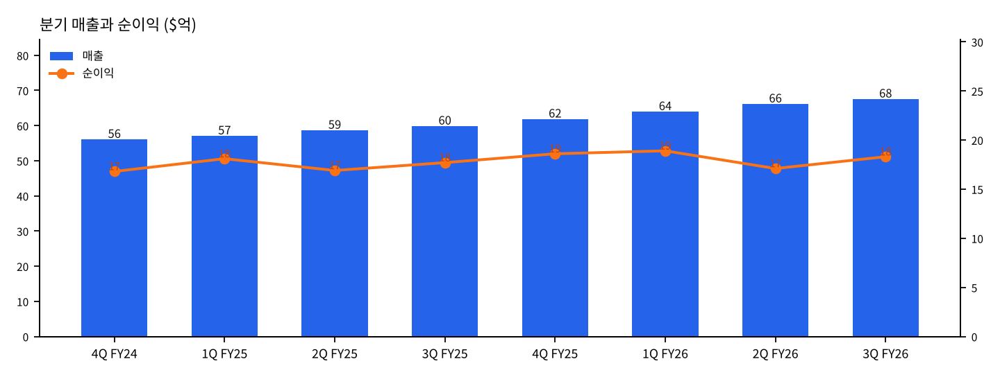
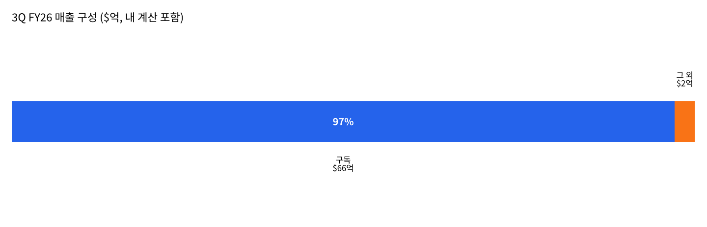
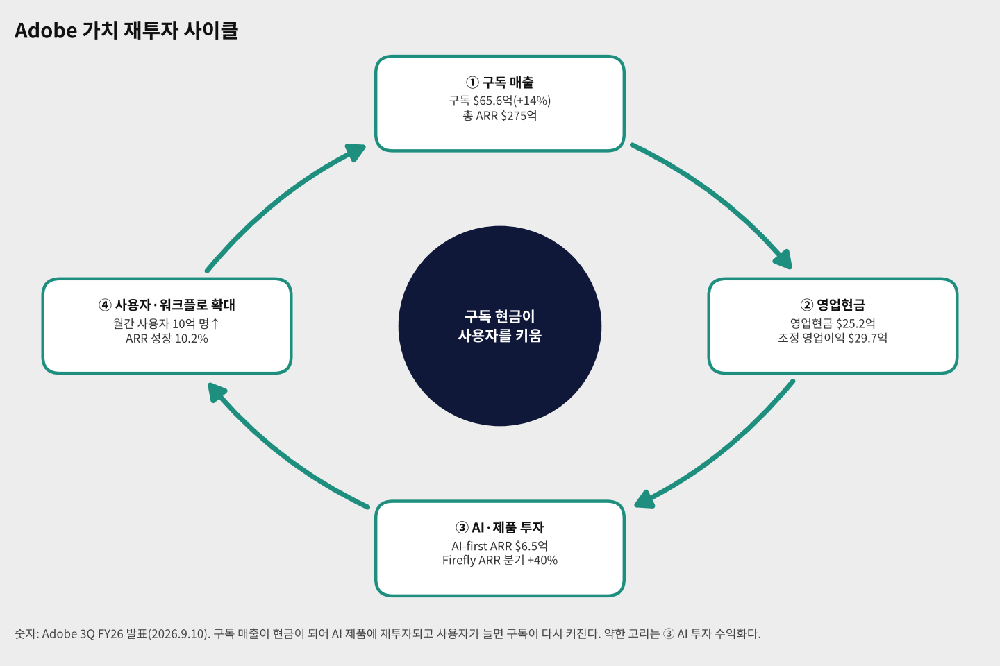

Adobe는 창작·문서·마케팅 소프트웨어를 구독으로 팔고, 생성형 AI(Firefly)를 기존 제품에 넣어 구독 단가와 사용자를 함께 키우려 한다.
| 항목 | 내용 |
|---|---|
| 종목 | Adobe (ADBE) · NASDAQ · 소프트웨어 · 캘리포니아 새너제이 |
| 최근 분기(3Q FY26) | 매출 $67.6억, 조정 EPS $6.13, 총 ARR $275억 |
| 핵심 상품 | Creative Cloud, Acrobat·Document Cloud, Experience Cloud, Firefly |
| 직원 수 | 약 31,360명(트레이딩뷰) |
| 멀티플 | PER·PEG·P/S는 08~10 항목 표 참조 |
| 직책 | 인물 | 역할·특징 |
|---|---|---|
| CEO(퇴임 예정) | 샨타누 나라옌(Shantanu Narayen) | 12월 1일 CEO 자리를 넘긴다 |
| 차기 CEO | 아닐 차크라바르티(Anil Chakravarthy) | 2026년 12월 1일 취임 |
| CFO | 스티브 데이(Steve Day) | 임시 CFO |
경영 스타일: 구독 + 제품 내 AI. 새 AI 제품을 따로 파는 대신 기존 구독 제품에 넣어 사용량과 단가를 올리는 방식이다. 지금은 CEO 교체기라 이 방향이 유지되는지가 관건이다.
이미지·영상 생성 AI를 Photoshop 등 기존 제품에 넣었다. Firefly ARR이 분기 40% 늘었다.
AI 중심 제품 ARR이 $6.5억을 넘었다. 총 ARR $275억의 약 2.4%(내 계산)라 아직 작다.
다음 실적발표는 세 가지 질문에 답하는 자리다.
1. AI-first ARR이 총 ARR을 끌어올리나?
2. CEO 교체 후 가이던스가 유지되나?
3. AI 경쟁 속에서 구독 해지가 늘지 않나?
한 줄 판정 규칙: 첫 질문(AI-first ARR)이 커지면 약한 고리인 ③ AI 투자 수익화가 풀리고, 정체하면 사이클이 구독 기반 유지에 그친다.
일정: 4Q FY26 실적 발표는 2026.12.09 예정(트레이딩뷰). 이때 FY27 가이던스와 새 CEO의 첫 발언이 나온다.
| 분기 | 매출 | 순이익 | EPS | 조정 EPS | 특이 사항 |
|---|---|---|---|---|---|
| 4Q FY24 | $56.1억 | $16.8억 | 3.80 | 4.81 | |
| 1Q FY25 | $57.1억 | $18.1억 | 4.13 | 5.08 | |
| 2Q FY25 | $58.7억 | $16.9억 | 3.94 | 5.06 | |
| 3Q FY25 | $59.9억 | $17.7억 | 4.18 | 5.31 | |
| 4Q FY25 | $61.9억 | $18.6억 | 4.45 | 5.50 | |
| 1Q FY26 | $64.0억 | $18.9억 | 4.60 | 6.06 | |
| 2Q FY26 | $66.2억 | $17.1억 | 4.26 | 5.96 | |
| 3Q FY26 | $67.6억 | $18.3억 | 4.62 | 6.13 | ARR $275억, AI-first ARR $6.5억 넘음 |
매출은 트레이딩뷰 스캐너의 분기 총매출이라 회사가 발표한 순매출과 다를 수 있다. 회계연도는 11월 말에 끝나며 3Q FY26은 2026년 8월 28일에 끝난 분기다. 매출·순이익·EPS(GAAP 희석)는 트레이딩뷰 스캐너, 조정 EPS는 트레이딩뷰 실적 페이지의 Reported 값이다. 분기 정렬은 오래된 분기→최신이다.

흐름 요약: 최근 분기 매출은 $67.6억로 전년 동기 $59.9억 대비 +12.9%, 순이익은 $18.3억(전년 $17.7억)다. 최근 4분기 GAAP EPS는 $17.93, 조정 EPS는 $23.65다.
| 항목 | 내용 | 3Q FY26 금액 | 비고 |
|---|---|---|---|
| 구독 매출 | Creative Cloud·Document Cloud 등 | $65.6억 | +14% |
| 그 외(내 계산) | 제품·서비스 등 | $2.0억 | 총 $67.6억에서 구독을 뺀 값 |

매출의 대부분이 구독이라 해지율과 가격이 곧 성장률이다.
Adobe는 누구나 콘텐츠를 만들고 문서를 다루게 하는 도구를 만드는 것을 목표로 한다.
| 축 | 내용 |
|---|---|
| 제품 | 창작·문서·마케팅 구독 |
| AI | Firefly를 제품 안에 통합 |
| 사용자 | 월간 활성 10억 명 넘음 |

| 이동평균 | 값 | 종가 대비 | 위치 |
|---|---|---|---|
| 5일선 | $234.70 | -5.1% | 종가 아래 |
| 20일선 | $243.72 | -8.6% | 종가 아래 |
| 50일선 | $244.45 | -8.9% | 종가 아래 |
| 100일선 | $248.12 | -10.3% | 종가 아래 |
| 200일선 | $246.63 | -9.7% | 종가 아래 |
52주 고가 $362.71(2025-12-12)·저가 $190.12(2026-06-18) 범위에서 종가 $222.67는 모든 이동평균선 아래이고.
| 규칙 | 기준 | 현재 값 | 신호 |
|---|---|---|---|
| 장기 추세 필터 | 종가 vs 200일선 | $222.67 < $246.63 | 매도 |
| 중장기 교차 | 50일선 vs 200일선 | $244.45 < $246.63 | 매도 |
| 단기 교차 | 20일선 vs 50일선 | $243.72 < $244.45 | 매도 |
| 돈키언 채널 | 55일 고가 $292.88 / 저가 $221.78 | 중간값 $257.33 아래 | 매도 |
| 1개월 모멘텀 | 21거래일 수익률 | -12.7% (기준 $255.06) | 매도 |
| 3개월 모멘텀 | 63거래일 수익률 | -19.1% (기준 $275.30) | 매도 |
| 6개월 모멘텀 | 126거래일 수익률 | -8.8% (기준 $244.10) | 매도 |
| 12개월 모멘텀 | 252거래일 수익률 | -31.4% (기준 $324.47) | 매도 |
| 종합 (8개 평균) | -1.00 | 강한 매도 |
해석: 매수 신호 0개(없음), 매도 신호 8개(장기 추세 필터, 중장기 교차, 단기 교차, 돈키언 채널, 1개월 모멘텀, 3개월 모멘텀, 6개월 모멘텀, 12개월 모멘텀). CTA 점수 -1.00(강한 매도). 14일 ATR $8.17 (3.7%), 52주 고가 $362.71 · 저가 $190.12.
| 가격 | 기준 | 무엇이 바뀌나 |
|---|---|---|
| $324.47 | 12개월 모멘텀 기준가 | 종가가 이 가격 위면 12개월 신호 매수 |
| $292.88 | 55일 고가 | 돌파 시 채널 상단 갱신 |
| $275.30 | 3개월 모멘텀 기준가 | 종가가 이 가격 위면 3개월 신호 매수 |
| $257.33 | 돈키언 중간값 | 55일 채널 중간값 위/아래로 신호가 바뀜 |
| $255.06 | 1개월 모멘텀 기준가 | 종가가 이 가격 위면 1개월 신호 매수 |
| $246.63 | 200일선 | 종가가 이 선 위/아래인지로 장기 추세 신호가 바뀜 |
| $244.10 | 6개월 모멘텀 기준가 | 종가가 이 가격 위면 6개월 신호 매수 |
| $221.78 | 55일 저가 | 이탈 시 채널 하단 갱신 |
가격 수준은 신호가 바뀌는 기준선일 뿐 진입·청산 가격 제안이 아니다. 20일/50일 교차는 이동평균 자체가 움직여 단일 가격으로 표시하지 않았다. 일봉·주봉은 종가 기준 직접 계산(고저 데이터 미사용)이다.
| 악재 요인 | 내용 | 강도 |
|---|---|---|
| AI 경쟁 | 생성형 AI 도구가 창작 소프트웨어 수요를 대체할 가능성 | 중간 |
| CEO 교체 | 12월 1일 새 CEO 취임, CFO는 임시 | 중간 |
| 주가 부담 | 52주 고점 $362.71 대비 종가 $222.67 (내 계산 약 −39%) | 참고 |
| 티커 | 회사 | PER(TTM) | PEG | P/S | EPS 성장(YoY) |
|---|---|---|---|---|---|
| ADBE | Adobe | 9.4배 | 0.56 | 3.34배 | +17% |
| CRM | Salesforce | 16.9배 | 0.29 | 3.56배 | +59% |
| INTU | Intuit | 18.8배 | 0.93 | 3.97배 | +20% |
| NOW | ServiceNow | 64.0배 | – | 6.12배 | -16% |
| MSFT | Microsoft | 26.3배 | 0.73 | 10.92배 | +36% |
비교 결론: Adobe의 PER 9.4배는 Salesforce·Intuit·Microsoft보다 낮다. PEG 0.56는 Salesforce(0.29)보다 높고 Intuit(0.93)·Microsoft(0.73)보다 낮다.
현금·부채는 트레이딩뷰 스캐너 값이다. Adobe는 영업현금흐름이 크다(3Q $25.2억).
| 지표 | 값 | 출처 | 해석 |
|---|---|---|---|
| 현금·단기투자 | $56억 | 트레이딩뷰 스캐너(최근 분기) | |
| 총부채 | $68억 | 트레이딩뷰 스캐너(최근 분기) | |
| 순부채(부채−현금) | $12억 | 내 계산 | 현금 대비 부채 부담 |
| 잉여현금흐름(TTM) | $106억 | 트레이딩뷰 스캐너 | |
| TTM 매출 | $260억 | 트레이딩뷰 스캐너 |
| 기준 | 매출 | P/S | 비고 |
|---|---|---|---|
| 내 계산(종가 ÷ 최근 4분기 매출 합계) | $259.7억 | 3.34배 | 시총은 정렬용 데이터에서만 사용 |
| 동종(트레이딩뷰) | – | CRM 3.56배 · INTU 3.97배 · NOW 6.12배 · MSFT 10.92배 | 11.19 |
해석: 분기 영업현금흐름 $25.2억에서 약 950만 주를 자사주로 사들였다(회사 발표). 부채는 현금을 웃돌지만 영업현금으로 충분히 감당할 규모다(내 해석).
EBITDA는 영업활동의 현금 창출력을 보는 지표이고, PEG는 PER을 EPS 성장률로 나눈 값이다. EBITDA·FCF는 트레이딩뷰 TTM 값이다.
| 지표 | 값 | 산출 |
|---|---|---|
| EBITDA(TTM) | $102억 | 트레이딩뷰 스캐너 |
| EBITDA 마진 | 39.2% | EBITDA ÷ TTM 매출(내 계산) |
| FCF 마진 | 40.8% | FCF ÷ TTM 매출(내 계산) |
| PER(GAAP TTM) | 12.4배 | $222.67 ÷ $17.93 |
| PER(조정 TTM) | 9.4배 | $222.67 ÷ $23.65 |
| 방식 | PER | EPS 성장률 | PEG | 판정 |
|---|---|---|---|---|
| 조정 EPS (TTM $23.65) | 9.4배 | +17% ($20.26 → $23.65) | 0.56 | 투자 적격 |
| GAAP EPS (TTM $17.93) | 12.4배 | +12% ($16.05 → $17.93) | 1.06 | 기준 초과 |
판정: 조정 EPS 기준 PEG 0.56 → 1.0 이하(투자 적격) PEG 기준은 1.0 이하 투자 적격, 0.5 이하 적극 매수다. EPS 성장률은 최근 4분기 EPS 합계를 직전 4분기 합계와 비교한 값(내 계산)이고, 일회성 항목이 있으면 조정 EPS 행을 함께 본다.

Adobe의 사이클: 구독 현금이 AI 제품에 들어가 사용자와 단가를 키우고, 늘어난 사용자가 다시 구독 매출이 되는 순환이다.
| 고리 | 현재 숫자·근거 |
|---|---|
| ① 구독 매출 | 3Q FY26 구독 매출 $65.6억(+14%) · 총 ARR $275억 |
| ② 영업현금 | 영업현금흐름 $25.2억 · 조정 영업이익 $29.7억 |
| ③ AI·제품 투자 | AI-first ARR $6.5억 넘음(+150% 넘게) · Firefly ARR 분기 +40% |
| ④ 사용자·워크플로 확대 | 월간 활성 사용자 10억 명 넘음 · 연말 ARR 성장률 가이던스 10.2% |
사이클의 특징: 약한 고리는 ③ AI 투자 수익화다(AI-first ARR이 총 ARR의 약 2.4%, 내 계산). "(내 해석)"은 보고서 수치가 아닌 해석이다.